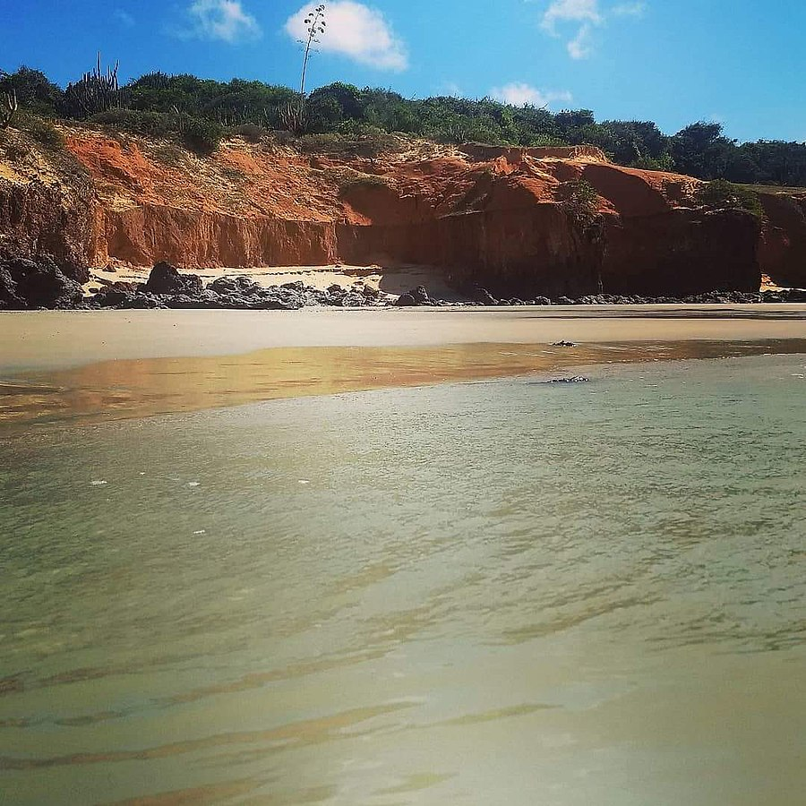
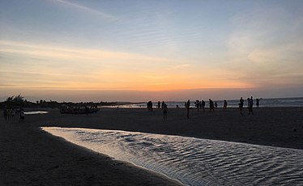

Informações técnicas sobre relevo, população, IDH etc.
| INFORMAÇÕES | |
|---|---|
| Municípios limítrofes | Norte – Oceano Atlântico Sul – Granja Leste – Jijoca de Jericoacoara e Bela Cruz Oeste – Barroquinha |
| Fundação | 17 de agosto de 1889 (131 anos) |
| Área total | 1 124,782 km² |
| Clima | Tropical (As) |
| IDH | 0,620 — médio |
| PIB | R$ 456 092,000 mil |
| INFORMAÇÕES TERRITORIAIS | |
|---|---|
| Número de habitantes | 63 661 habitantes |
| Superfície de Camocim |
113 921 hectares
1139,21 km² |
| Densidade populacional | 55,9 ha./km² |
| Altitude de Camocim | 2 metros de altitude |
| Coordenadas geográficas decimais |
Latitude:
-2.91314
Longitude: -40.8463 |
| Coordenadas geográficas sexagesimais | Latitude: 2° 54' 47'' Sul , Longitude: 40° 50' 47'' Oeste |
| INFORMAÇÕES DO MUNICÍPIO | |
|---|---|
| Endereço da Prefeitura Municipal de Camocim |
Camocim
Prefeitura de Camocim
Pça. MuriloAguiar, s/n CAMOCIM - CE, 62400-000 Brasil |
| Telefone da prefeitura |
(88) 3621-0096
Internacional: +55 88 3621-0096 |
| Fax |
Não disponível
Não disponível |
| Endereço electrónicoda prefeitura |
fernandoveras@verdesmares.com.br
|
| Site oficial do município | camocim.ce.gov.br |
| INFORMAÇÕES ADMINISTRATIVAS | ||
|---|---|---|
| Prefeito de Camocim | MARIA ELIZABETE MAGALHAES | |
| Partido politico | PDT | |
| INFORMAÇÕES DE TRANSPORTE | |
|---|---|
| Transporte urbano disponível | Não disponível |
| Aeroporto |
Aeroporto Pinto Martins
Aeroporto Internacional Prefeito Dr.João Silva Filho
98.5 km
Aeroporto de Sobral
102.5 km
|
| INFORMAÇÕES DE DISTÂNCIA A OUTRAS CIDADES | ||
|---|---|---|
| São Paulo : 2380 km | Rio de Janeiro : 2240 km | Brasília : 1629 km |
| Salvador : 1149 km | Belo Horizonte : 1912 km | Manaus : 2132 km |
| Curitiba : 2664 km | Fortaleza : 271 km mais perto | Goiânia : 1787 km |
| Belém : 867 km | Porto Alegre : 3211 km | Guarulhos : 2360 km |
| Campinas : 2324 km | São Luís : 387 km | Recife : 874 km |
| Distância calculada em linha reta! | ||
Conheça mais sobre a história da Camocim.
Camocim é uma cidade do estado do Ceará, Brasil. Localiza-se na microrregião do Litoral de Camocim e Acaraú, mesorregião do Noroeste Camocinense. O município tem quase 60 mil habitantes e 1158 km². É a terra do aviador Pinto Martins.A área na qual Camocim localiza-se é um território de uma rica história de intercambio e conflitos entre povos. Os primeiros habitantes foram os indígenas de várias etnias, tais como os Tremembé, Tabajara, Jurema, Jenipaboaçu, Cambida.
Os portugueses chegaram nestas bandas, a partir da segunda metade do Século XVI, com diversos intuitos: um reconhecimento completo da região a partir de Tutóia no Maranhão aos limites finais entre Ceará e Rio Grande do Norte(a barra do rio Camorim, por exemplo foi cartografada com o nome de Rio da Cruz); Como base de apoio para a ocupação do litoral, bem como base de apoio para confrontos militares com os franceses que ocupavam o Maranhão. Deste momento histórico existem várias cartas topográficas datadas dos séculos XVII. Por exemplo: em 1604, Pero Coelho de Souza, passou nestas bandas com rumo a Ibiapaba e as batalhas no Maranhão.
Depois da segunda metade do século XVII, surge o projeto de construir o Forte em Camocim com a intenção de proteção dos ataques dos índios e do piratas, porém este projeto não foi adiante. A Barra do Camocim como núcleo urbano vai consolida-se com a traferêcia da Missão de da Tabainha. Um empreendimento do padre Ascenço Gago, com o intuito de aldaiar os Tremembé e outra etnias. A partir de 1792, chegam a Barra do Camocim, famílias oriundas de Tutoia, as quais implementaram a agricultura e pecuária na região. Em 1868, foi criado o distrito policial e desta forma Camocim consolida-se como núcleo urbano. E o que vai definitivamente consolidar Camocim como centro urbano e econômico é a construção da Estrada de Ferro de Sobral-Camocim a partir de 1879 e porto.
Saiba mais sobre os melhores lugares e o que fazer em Camocim.
A Praia das Barreiras, na foz do rio Coreaú, a 3 Km do centro de Camocim, nos oferece uma visão panorâmica a partir de suas falésia elevadas, de onde vislumbram-se o mar aberto, grande parte da costa leste do município, até a praia das Umburanas, as alvas dunas da ilha da Testa Branca
Praia de Maceió, ou Praia do Maceió é um praia brasileira localizada na cidade de Camocim, no Estado do Ceará. Está localizada a 378km de Fortaleza e a 15 km do centro de Camocim. Nessa praia, fica localizada uma vila de pescadores que possui infra-estrutura ainda pouco desenvolvida com casas de veraneio, bares, restaurantes e barracas. É definida como uma praia de águas tranquilas. Maceió destaca-se pela beleza rústica. Possui uma boa faixa de areia clara, com ondas propícias para o banho e para a prática de esportes aquáticos como surf e windsurf e kitesurf.

Veja como chegar nos melhores pontos de Camocim